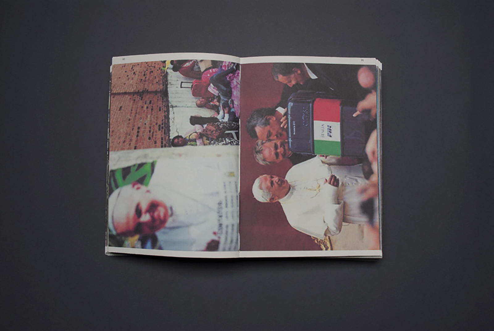
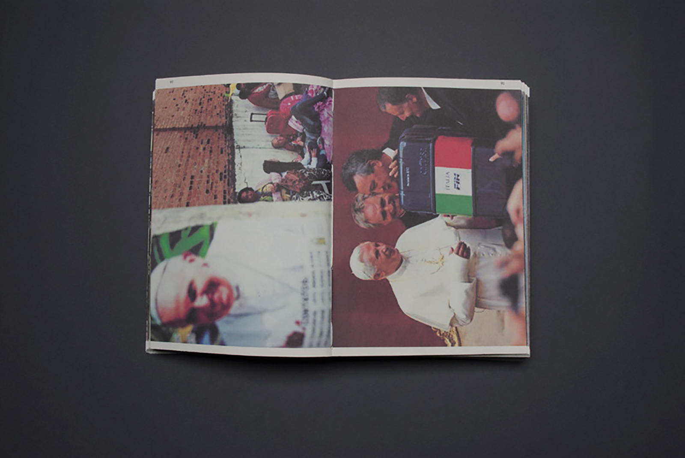

\/\/\/\
 

What's inside the "koffer?"
“Every third Tuesday of September, Budget Day. King Willem-Alexander is giving the King’s speech on behalf of the Government in the Hall of Knights. Later that day, the minister of Finance offers the House of Representatives the Budget and the state budget in the famous ‘koffer’ (case).” - text: www.tweedekamer.nl
The ‘koffer’ of the minister represents the decisions of the Government. Decisions about money, this money has a starting point, the government, but the destination of this money unknown for the the citizens. The journey of the money is as all the more interesting, because the decisions of the Government inside this ‘koffer’ have consequences for society.
Also the media is very interested in this ‘koffer’. Because of what is inside this ’koffer’ and because of the attention that it gets the ‘koffer’ gets a value. Does the value of it always stay the same or does it also change? When does it get determined which ‘koffer’ gets which value? Is it because of what is inside it? Because of the experience of the ’Koffer’? Or by whom the ‘koffer’ is being held? This is something what kept me busy. Does the ‘koffer’ of the Budget-day have more value than the ‘koffer’ of a refugee on the same day? I wanted to find out this value by building a photo-archive of ‘koffers’, categorize these photos and make combinations of two different ‘koffers’.
Exhibited in the Dutch Ministry of Finance between the 4th and 20th of February 2014.